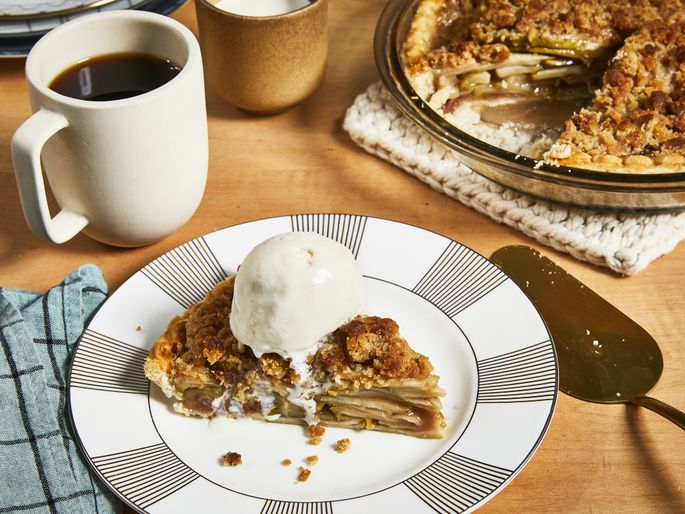

Apple Pie

Description
This is a classic apple pie recipe that's perfect for any occasion.
Ingredients
- 2 1/2 cups all-purpose flour
- 1 cup unsalted butter, chilled and cubed
- 1/4 cup ice water
- 6 cups thinly sliced apples
- 3/4 cup granulated sugar
- 1 teaspoon ground cinnamon
- 1/4 teaspoon ground nutmeg
- 1 tablespoon lemon juice
Instructions
- Preheat the oven to 425°F (220°C).
- In a large bowl, combine the flour and butter. Use a pastry cutter or your fingers to mix until the mixture resembles coarse crumbs.
- Gradually add the ice water, mixing until the dough comes together. Divide the dough in half, shape into disks, wrap in plastic wrap, and refrigerate for at least 30 minutes.
- In a large bowl, combine the sliced apples, sugar, cinnamon, nutmeg, and lemon juice. Toss to coat the apples evenly.
- Roll out one disk of dough on a floured surface to fit a 9-inch pie dish. Transfer the dough to the pie dish and trim the edges.
- Pour the apple filling into the crust. Roll out the second disk of dough and place it over the filling. Trim the edges and crimp to seal. Cut a few slits in the top crust to allow steam to escape.
- Bake for 45-50 minutes, or until the crust is golden brown and the filling is bubbly. If the edges of the crust start to brown too quickly, cover them with aluminum foil.
- Let the pie cool for at least 2 hours before serving.